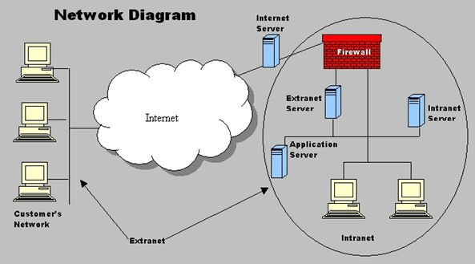

🏢 Intranet — The Company's Private Network

An intranet is a private computer network that only people inside an organization can access. It looks and works just like the public internet — you use a browser, click links, visit pages — but it's completely locked down from the outside world.
✏️ My simple way to think about it: Imagine a private library that only employees of a company can enter. The books and information inside are for staff only. You need a key card (login) to get in, and visitors can't see anything. That's an intranet.
🔑 Key Characteristics of an Intranet
- Private & restricted — only employees or authorized members can access
- Behind a firewall — protected from outside intruders
- Uses web technologies — browsers, HTTP, HTML (same as the public web)
- Requires login — username and password (sometimes two-factor authentication)
- Not accessible from the public internet — you usually need to be in the office or use a VPN
📋 What Companies Use Intranets For
📢 Company news & announcements
👥 Employee directory
📄 Document sharing & storage
💰 Payroll & benefits portal
🗓️ Leave requests & time tracking
📚 Training materials & wikis
📧 Internal messaging
📊 Project management tools
🆚 Intranet vs Extranet vs Internet
🏢 Intranet
Internal employees only
Behind corporate firewall
Company private network
🌐 Internet
Anyone in the world
Public access
Everything else
💡 Why Intranets Matter
Before intranets, companies shared information using paper memos, emails, or shared drives — which was messy and hard to organize. Intranets gave employees a central place to find everything: company policies, HR forms, internal news, and team updates.
Big companies like Microsoft, Google, and Amazon all have massive intranets that thousands of employees use every day. Sometimes they look just like internal versions of public websites.
💭 What I think: I've never worked in a big company, but I can see why intranets are useful. Instead of hunting through emails or asking coworkers for documents, everything is in one place. It saves time and reduces confusion. I'd probably use it a lot if I had one.
🔒 Security Measures
- Firewalls — block unauthorized traffic from the outside
- Authentication — you must prove who you are (login + password)
- Authorization — different employees see different things (HR sees payroll, interns see training)
- VPN — for remote employees to connect securely from home
← Back to all terms